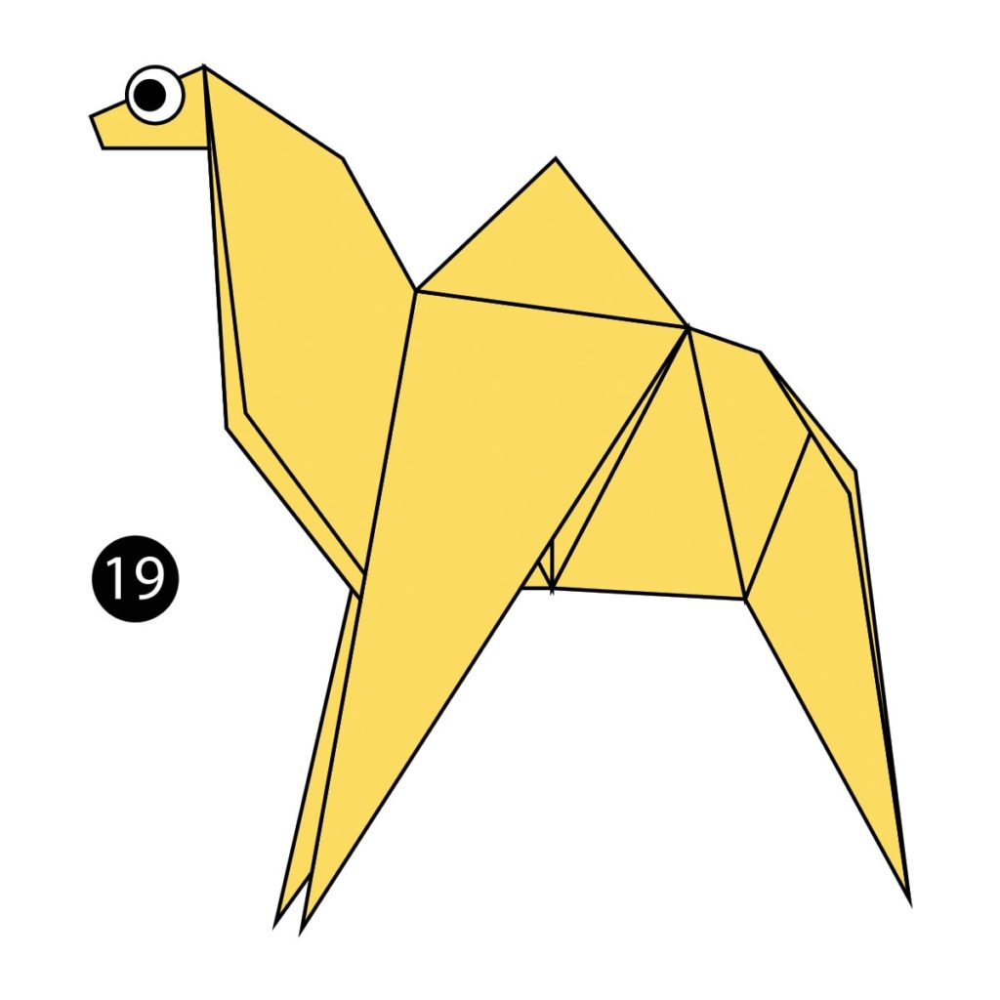
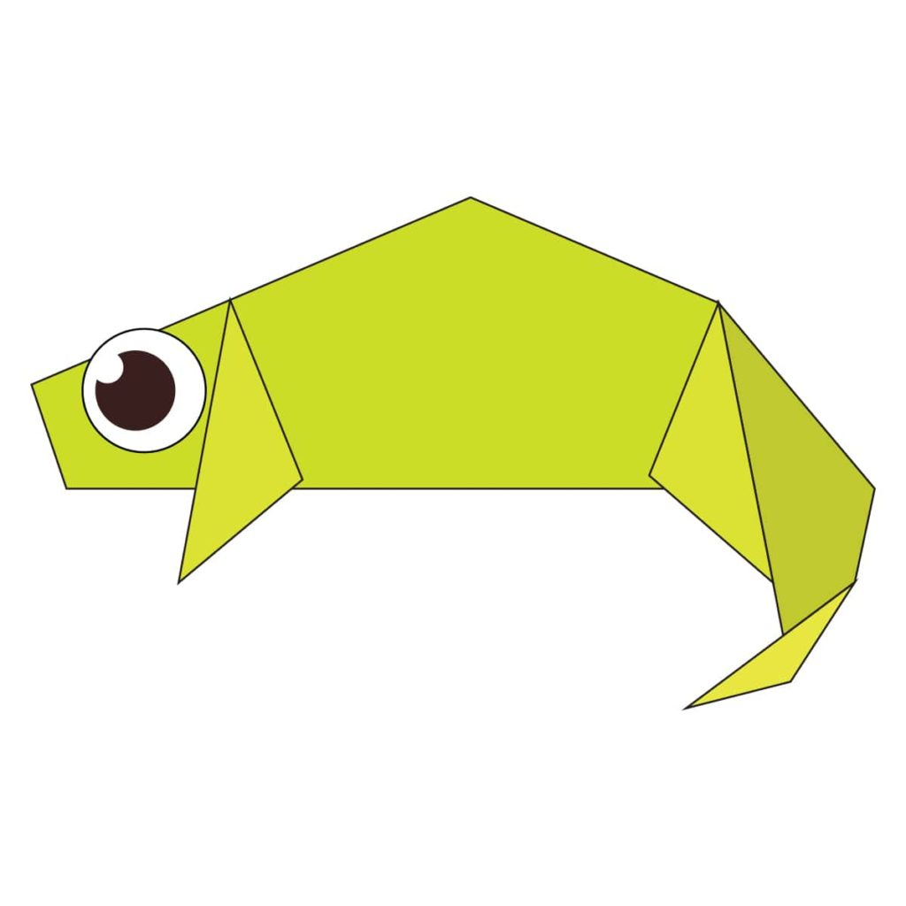
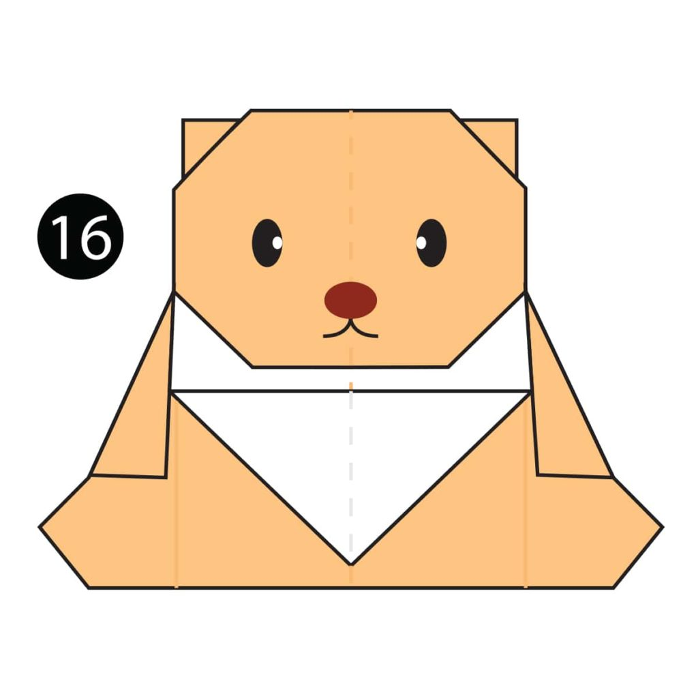
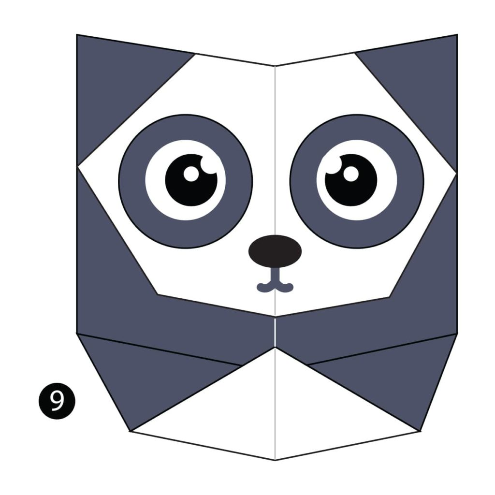
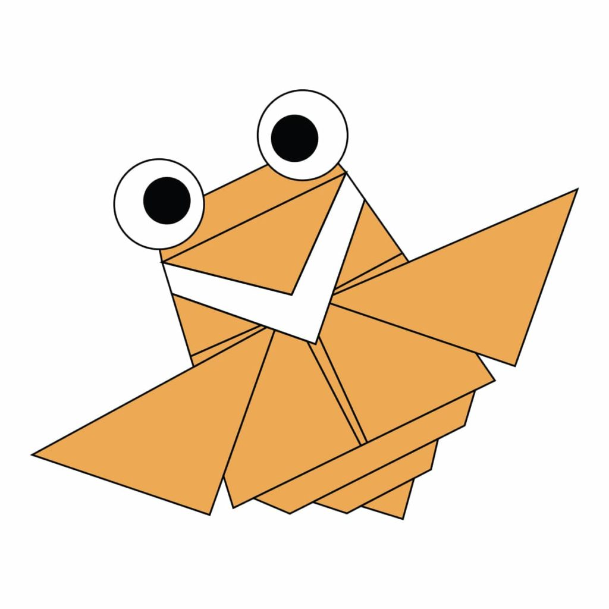

Origami Designs
About Us
Follow Us
These are some origami designs to try for youself!
(Click on the pictures to try them!)

Interesting facts about the Camel
- Their humps let them store up to 80 pounds of fat which they can live off for weeks and even months!
- Camels are very strong and can carry up to 900 pounds for 25 miles a day.
- When a camel finally does find water, he can drink up to 40 gallons in one go.

Interesting facts about the Chameleon
- Chameleons are reptiles that are part of the iguana suborder
- Changing skin color is an important part of communication among chameleons
- Most chameleons have a prehensile tail that they use to wrap around tree branches

Interesting facts about the Pigeon
- Pigeons are incredibly complex and intelligent animals
- Pigeons are renowned for their outstanding navigational abilities
- Pigeons have excellent hearing abilities

Interesting facts about the Teddy Bear
- The teddy was named after President Theodore Roosevelt, after he refused to shoot a bear during a 1902 hunting trip.
- A teddy has been into space! Magellan T Bear boarded Space Shuttle Discovery in 1995 as part of a school project.
- In 1902 in Germany, Steiff launched “Bear 55 PB”, the first toy bear with jointed arms and legs.

Interesting facts about the Panda
- Giant pandas are good at climbing trees and can also swim.They can climb trees from 7 months old.
- Pandas have carnivorous teeth, but they eat bamboo and fruit.
- Pandas have 6 toes to grasp bamboo.

Interesting facts about the Cicada
- The body of a cicada is similar to that of a violin or a guitar
- Cicadas make noise like toy frogs
- Cicadas can survive a huge fall as babies